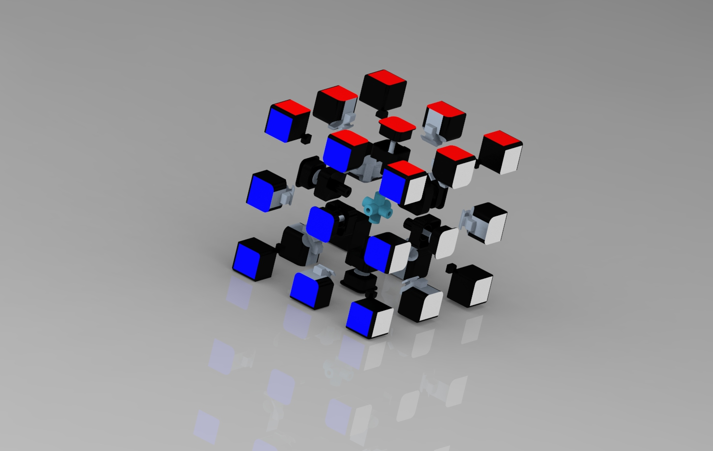
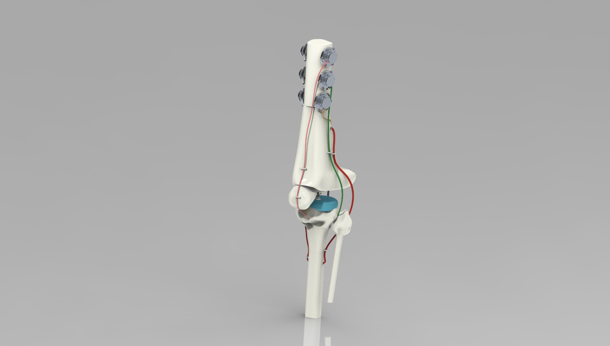
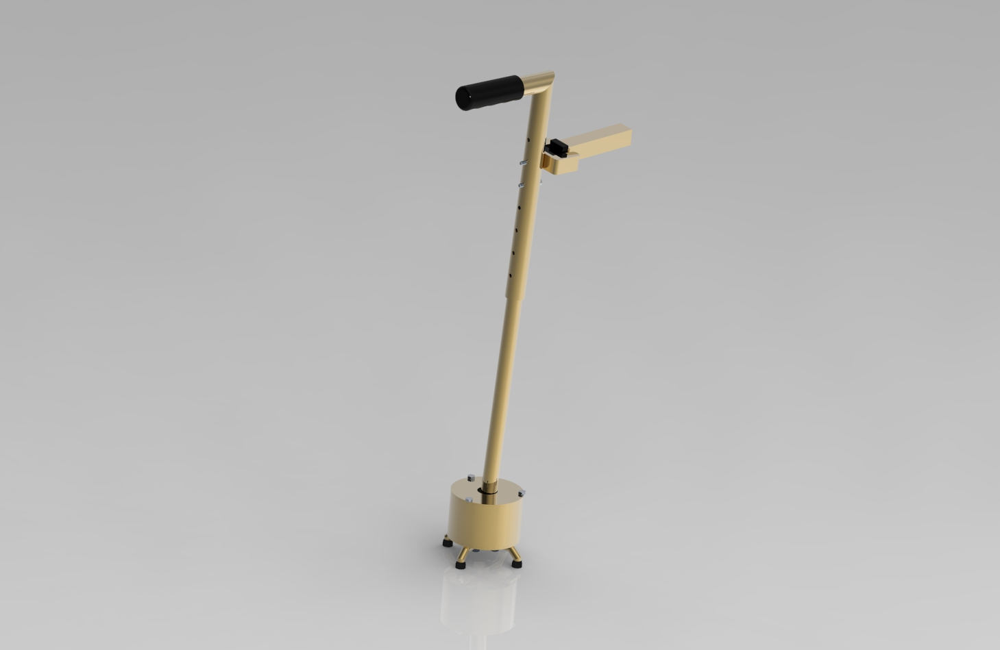

Read More
Designing and modeling an electric, portable, and adjustable stand for a robotic arm, using SolidWorks. Building accompanying Android application using Java, with JNI written in C to interface with control code written in C++
Read More
Modeled Rubik's Cube using Creo Parametric and redesigned it to improve recylability and assembly efficiency. Conducted Statistical and Design for Manufacture and Assembly Analysis and a 2k Design of Experiment to test redesigned product against original.
Read More
Designed and modeled knee ligament tear simulator using Autodesk Fusion 360. Modeled individual bones through extensive surface modeling. Presented final product to panel of esteemed judges.
Read More
Lead mechanical division in signal processing of extrapolated EEG data, using Matlab. Design, build, and write control code for 3-axis robot that will write out a message based on an algorithm that processes EEG signals generated from foot taps.
Read More
Organize and lead project meetings. Structure efficient workflow and lead development of a 3D printed knee brace to help maintain mobility in a dog with 2 torn CCL's
Read MoreDesign, modeled, and presented a Therapeutic Tremor-Adaptive Cane, using Creo Parametric. Created Pugh Matrix, Product Design Specification, detailed model, engineering drawings, and Bill of Materials. Adhered to general GD&T standards and used cost estimation software, aPriori to cost parts.
Read More
Compilation of comprehensive, written technical reports on various manufacturing processes ie. Casting, Injection Molding, etc. Worked with two others and consistently received recognition for top reports.
Read More